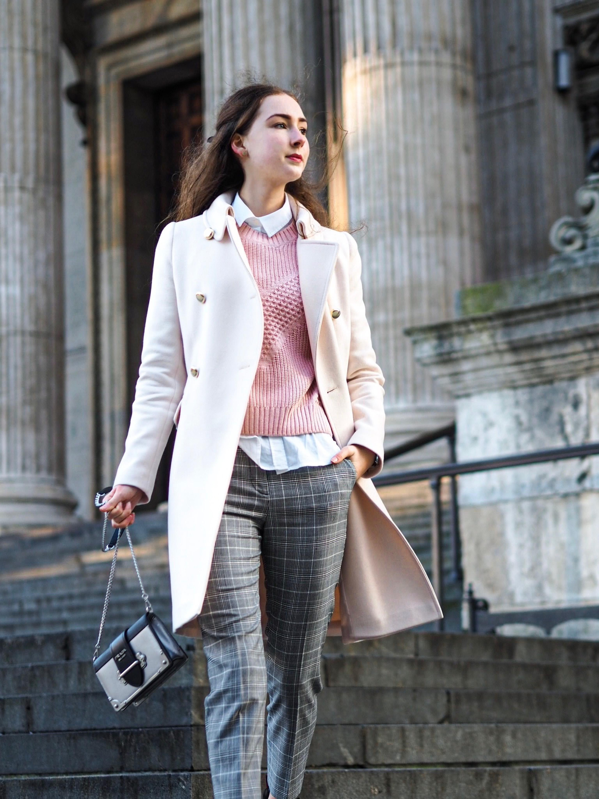
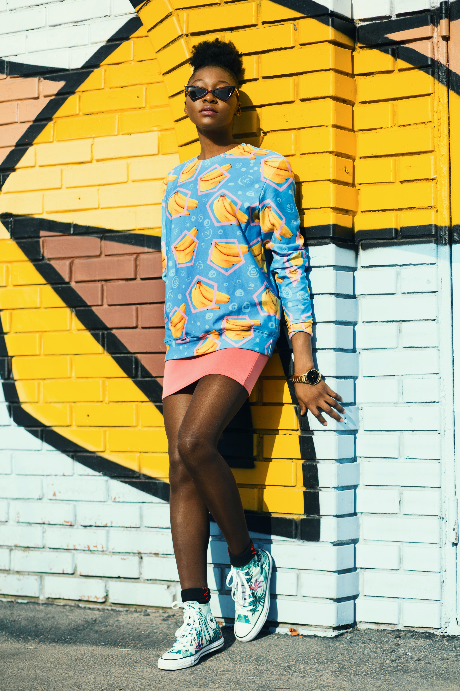

CATEGORIES
CASUAL STYLE
'casual style' is what one wears out of the office or on weekends, when you're relaxing. Some examples of casual clothes include jeans, shorts, slippers, sneakers or sneakers or flip-flops
VINTAGE STYLE

An example is a simple dress slip that appeared in the early 1990s, a style that resembled a design in the 1930s, but upon examining it would appear only superficial in appearance to the original. It is commonly referred to as "vintage style," "inspired by vintage," or "vintage reproduction." They serve as a convenient alternative to those who admire the old style but prefer modern interpretation.
ARTSY STYLE
This is an unconventional style with bright and bold colors and exaggerated prints. The clothes and accessories will have unusual silhouettes in strange shapes. Mostly handcrafted accessories and handmade fabrics.